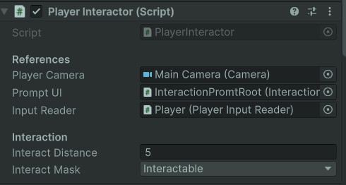
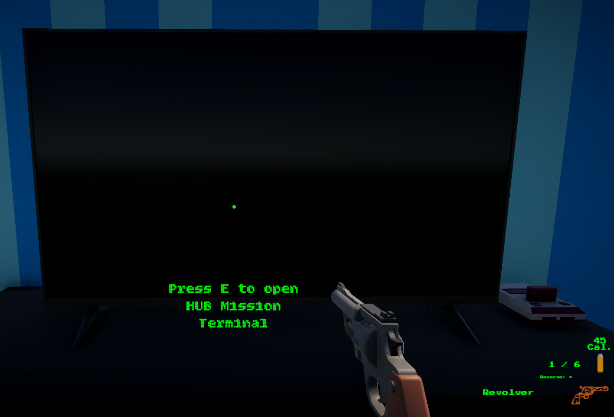

Weapon Pedestal Prompt
The player receives a readable prompt when looking at an interactable weapon pedestal.
- Prompt UI
- Weapon Pedestal
- Interactable
A reusable Unity interaction layer for raycast-based object detection, player prompts, mission terminals, weapon pedestals, and world objects that expose simple interaction behavior through interfaces.
This system lets the player look at usable objects, see a prompt, press interact, and let the object decide what happens.
The Interaction & Prompt System gives Echo Systems Lab a reusable way to connect the player to world objects. Instead of hardcoding terminal logic, weapon pickup logic, and prompt text directly inside the player controller, interactable objects expose their behavior through a shared interface.
The player interactor casts forward from the camera, checks for an interactable target, shows the correct prompt, and calls the target’s interaction method when the player presses the interact input. This lets objects like mission terminals, weapon pedestals, and future puzzle devices each own their own response.
The result is a clean interaction pipeline that is easy to extend. New interactable objects can be added without rewriting the player controller or duplicating prompt logic.
Detect usable world objects, show player-facing prompts, and route interaction input into object-owned behavior.
Look at object → Detect interactable → Show prompt → Press interact → Object handles action.
Demonstrates interface-based architecture, player UI feedback, input routing, and reusable world interaction design.
Screenshot references for prompts, interactable setup, mission terminal use, weapon pedestal pickup flow, and object-owned behavior.
The player receives a readable prompt when looking at an interactable weapon pedestal.

The same interaction path can open mission UI, proving the system is not limited to pickups.

The interactor owns detection range, raycast setup, prompt connection, and input-triggered interaction routing.

Prompt display is separated from interactable behavior so the UI can be reused across many object types.

Interactable objects can reference data assets, allowing the interaction system to stay generic.

The hub uses interactable objects to connect environment exploration with mission flow and gameplay setup.
The player interactor is the scout, the prompt is the signpost, and the interactable object is the tiny machine behind the curtain.
The interactor casts from the player camera to find usable objects in front of the player.
The hit object is checked for an IInteractable implementation on itself or its parent object.
If the object can be interacted with, the prompt UI displays the object’s interaction message.
The input reader reports an interact press and the player interactor calls the target’s interaction method.
The mission terminal can open UI, while a weapon pedestal can equip a weapon and hide its visual.
When the player looks away, interaction becomes unavailable and the prompt hides.
Each script owns one slice of the interaction pipeline so the system stays flexible and calm instead of becoming spaghetti confetti.
A shared interface for world objects that can provide prompt text and respond when the player interacts.
Performs raycast detection, tracks the current interactable target, updates prompts, and forwards interact input.
Shows and hides the prompt root and updates the TextMeshPro prompt message.
Uses the interaction system as the player-facing entry point into mission selection and unlock flow.
Lets a mission present a weapon in the world, respond to interaction, equip the player, and update pedestal visibility.
The same interface can support doors, switches, terminals, elevators, pickups, puzzle props, tutorial signs, and test devices.
The important design decision is that the player finds interactables, but the interactable decides what interaction means.
Without an interface, the player controller would need to know about every possible object type: mission terminals, weapon pedestals, doors, pickups, puzzle objects, and future trial props. That turns the player script into a junk drawer with a keyboard.
With IInteractable, the player only asks a simple question: “Can this object be interacted with?” If the answer is yes, the object provides prompt text and handles its own behavior.
This keeps the player-side code generic and lets each object own its unique interaction response. It also makes the system easier to test because prompt display, raycast detection, and object behavior are separate concerns.
The player interactor does not need to know what kind of object it found.
Each interactable object owns its action, prompt message, and setup data.
New terminals, pickups, and trial objects can be added without rewriting player interaction logic.
The interaction layer connects directly into mission selection, weapon equipment, input, and progression.
Uses interaction to open the terminal and route the player into available missions.
Uses interactable pedestals and pickups to equip mission weapons and expand player loadouts.
Supplies the interact button input while letting menus safely disable gameplay actions.